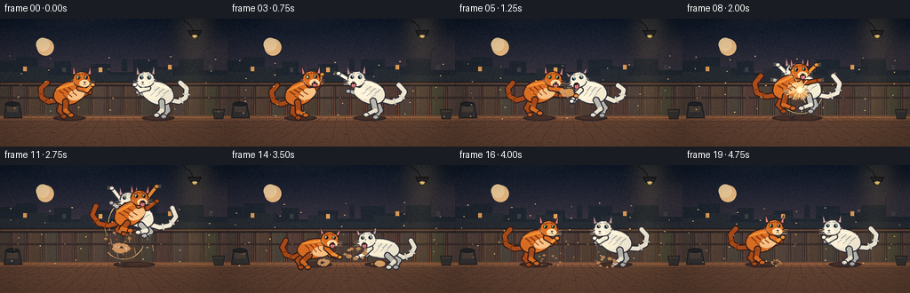
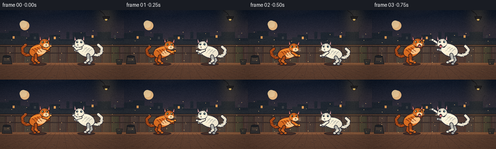

CODING AGENTS AS PIXEL WORLD MODELS
traex/DeepSeek-V4.1-Flash · instance_preservation_0005
点击播放 · 原生 RGB 像素
逐轮保存的候选
回放视频、检查图与代码变化。
每份候选均可单独播放。实际图片检查记录在下方工具轨迹中。
候选 01播放与检查图
点击播放 · 原生 RGB 像素


展开代码变化
--- 上一保存版本
+++ 本次保存版本
@@ -0,0 +1,797 @@
+from __future__ import annotations
+
+import math
+import random
+from pathlib import Path
+
+import numpy as np
+from PIL import Image, ImageDraw, ImageFilter
+
+import artifact_io
+
+
+WIDTH = 256
+HEIGHT = 144
+FRAMES = 20
+FPS = 4.0
+SS = 4
+W = WIDTH * SS
+H = HEIGHT * SS
+CASE_DIR = Path(__file__).resolve().parent
+
+
+def mix(a, b, t):
+ return tuple(round(x + (y - x) * t) for x, y in zip(a, b))
+
+
+def lerp(a, b, t):
+ return a + (b - a) * t
+
+
+def ease(t):
+ t = max(0.0, min(1.0, t))
+ return t * t * (3.0 - 2.0 * t)
+
+
+def pulse(t, center, width):
+ return math.exp(-((t - center) / width) ** 2)
+
+
+def pt(p):
+ return (p[0] * SS, p[1] * SS)
+
+
+class Painter:
+ def __init__(self, image):
+ self.image = image
+ self.draw = ImageDraw.Draw(image)
+
+ def polygon(self, points, fill, outline=None, width=0):
+ self.draw.polygon([pt(p) for p in points], fill=fill, outline=outline,
+ width=max(1, round(width * SS)))
+
+ def ellipse(self, center, rx, ry, fill, outline=None, width=0):
+ x, y = pt(center)
+ self.draw.ellipse((x - rx * SS, y - ry * SS, x + rx * SS, y + ry * SS),
+ fill=fill, outline=outline, width=max(0, round(width * SS)))
+
+ def capsule(self, points, width, fill, outline=None, outline_width=0):
+ if len(points) < 2:
+ return
+ scaled = [pt(p) for p in points]
+ if outline is not None and outline_width:
+ ow = width + outline_width * 2
+ self.draw.line(scaled, fill=outline, width=round(ow * SS), joint="curve")
+ r = ow * SS / 2
+ for x, y in (scaled[0], scaled[-1]):
+ self.draw.ellipse((x - r, y - r, x + r, y + r), fill=outline)
+ self.draw.line(scaled, fill=fill, width=max(1, round(width * SS)), joint="curve")
+ r = width * SS / 2
+ for x, y in (scaled[0], scaled[-1]):
+ self.draw.ellipse((x - r, y - r, x + r, y + r), fill=fill)
+
+ def line(self, points, fill, width=1):
+ self.draw.line([pt(p) for p in points], fill=fill, width=max(1, round(width * SS)),
+ joint="curve")
+
+ def rotated_ellipse(self, center, rx, ry, angle, fill, outline=None, width=0):
+ a = math.radians(angle)
+ c, s = math.cos(a), math.sin(a)
+ points = []
+ for i in range(40):
+ t = 2.0 * math.pi * i / 40
+ x, y = rx * math.cos(t), ry * math.sin(t)
+ points.append((center[0] + x * c - y * s, center[1] + x * s + y * c))
+ self.polygon(points, fill, outline, width)
+
+
+def rotated_point(center, angle, x, y):
+ a = math.radians(angle)
+ return (center[0] + x * math.cos(a) - y * math.sin(a),
+ center[1] + x * math.sin(a) + y * math.cos(a))
+
+
+def body_point(pose, x, y):
+ sign = pose["sign"]
+ a = math.radians(pose["angle"])
+ dx = sign * x
+ return (pose["x"] + dx * math.cos(a) - y * math.sin(a),
+ pose["y"] + dx * math.sin(a) + y * math.cos(a))
+
+
+def head_point(pose, x, y):
+ hx, hy = body_point(pose, pose["head"][0], pose["head"][1])
+ return rotated_point((hx, hy), pose["head_angle"], pose["sign"] * x, y)
+
+
+def head_ellipse(pose, center, rx, ry, fill, outline, width):
+ hx, hy = body_point(pose, pose["head"][0], pose["head"][1])
+ return (center, hx, hy, rx, ry, pose["head_angle"], fill, outline, width)
+
+
+def draw_head_ellipse(p, pose, rx, ry, fill, outline, width):
+ hx, hy = body_point(pose, pose["head"][0], pose["head"][1])
+ p.rotated_ellipse((hx, hy), rx, ry, pose["head_angle"], fill, outline, width)
+
+
+def draw_tail(p, pose, fill, shade, outline):
+ pts = [body_point(pose, *q) for q in pose["tail"]]
+ p.capsule(pts, pose.get("tail_width", 4.7), fill, outline, 1.25)
+ # A few darker bands make the orange cat's tail read as a tabby tail.
+ if shade is not None:
+ for i in (1, 2, 4):
+ if i + 1 >= len(pts):
+ continue
+ a, b = pts[i], pts[i + 1]
+ dx, dy = b[0] - a[0], b[1] - a[1]
+ n = math.hypot(dx, dy) or 1.0
+ nx, ny = -dy / n, dx / n
+ p.capsule([(a[0] + dx * 0.35 + nx * 3.1, a[1] + dy * 0.35 + ny * 3.1),
+ (a[0] + dx * 0.35 - nx * 3.1, a[1] + dy * 0.35 - ny * 3.1)],
+ 1.6, shade)
+
+
+def draw_limb(p, pose, points, widths, fill, shade, outline):
+ world = [body_point(pose, *q) for q in points]
+ for i in range(len(world) - 1):
+ p.capsule([world[i], world[i + 1]], widths[i], outline, outline, 1.25)
+ for i in range(len(world) - 1):
+ p.capsule([world[i], world[i + 1]], widths[i], shade if i == 0 else fill)
+ return world
+
+
+def draw_leg(p, pose, points, fill, shade, outline):
+ world = draw_limb(p, pose, points, (5.6, 4.3, 3.8), fill, shade, outline)
+ paw = world[-1]
+ p.ellipse(paw, 3.6, 2.9, fill, outline, 1.1)
+ # Toe marks keep the paws from becoming featureless blobs.
+ for k in (-1.2, 1.2):
+ p.line([(paw[0] + k, paw[1] + 1.0), (paw[0] + k * 1.25, paw[1] + 2.4)],
+ outline, 0.55)
+ return paw
+
+
+def draw_arm(p, pose, points, fill, shade, outline, claws=False):
+ world = draw_limb(p, pose, points, (4.5, 3.4), fill, shade, outline)
+ paw = world[-1]
+ p.ellipse(paw, 3.0, 2.6, fill, outline, 1.0)
+ if claws:
+ direction = 1 if pose["sign"] > 0 else -1
+ for k in (-1.4, 0.0, 1.4):
+ p.line([(paw[0] + direction * 1.5, paw[1] + k),
+ (paw[0] + direction * 5.0, paw[1] + k - 0.4)],
+ (245, 232, 196), 0.55)
+ return paw
+
+
+def draw_face(p, pose, palette):
+ kind = pose["kind"]
+ eye_color = palette["eye"]
+ outline = palette["outline"]
+ blink = pose.get("blink", 0.0)
+ angry = pose.get("angry", 0.6)
+ open_mouth = pose.get("mouth", 0.0)
+
+ # Eyes, placed on the three-quarter face plane.
+ for ex, ey, er in ((-3.9, -2.0, 2.25), (4.8, -2.4, 2.05)):
+ c = head_point(pose, ex, ey)
+ if blink > 0.7:
+ p.line([head_point(pose, ex - 2.2, ey), head_point(pose, ex + 2.2, ey)],
+ outline, 0.9)
+ continue
+ p.ellipse(c, er, er * (1.0 - 0.24 * blink), eye_color, outline, 0.65)
+ pupil_r = 0.95 if kind == "orange" else 1.0
+ pc = head_point(pose, ex + 0.45, ey)
+ p.ellipse(pc, pupil_r, 1.5 * (1.0 - 0.3 * blink), (23, 25, 27))
+ hc = head_point(pose, ex - 0.15, ey - 0.85)
+ p.ellipse(hc, 0.55, 0.55, (250, 248, 225))
+ # Angled brow shards sell the fight expression.
+ if angry > 0.25:
+ brow_y = ey - 3.7
+ p.line([head_point(pose, ex - 2.8, brow_y + 0.5),
+ head_point(pose, ex + 2.4, brow_y - 0.5)],
+ palette["stripe"], 0.75 + angry * 0.3)
+
+ # Muzzle, nose, and mouth.
+ p.ellipse(head_point(pose, 3.3, 4.3), 5.7, 3.9, palette["muzzle"])
+ nose = [head_point(pose, 2.0, 2.6), head_point(pose, 5.1, 2.6),
+ head_point(pose, 3.55, 4.2)]
+ p.polygon(nose, (223, 127, 131), outline, 0.5)
+ p.line([head_point(pose, 3.55, 4.2), head_point(pose, 3.55, 5.2)], outline, 0.55)
+ if open_mouth > 0.25:
+ mh = 1.6 + open_mouth * 2.4
+ p.ellipse(head_point(pose, 3.6, 6.3), 3.4, mh, (57, 25, 27), outline, 0.55)
+ p.ellipse(head_point(pose, 3.6, 7.3), 2.2, 1.1 + open_mouth, (214, 112, 121))
+ p.line([head_point(pose, 2.0, 5.3), head_point(pose, 2.1, 6.8)], (248, 239, 211), 0.55)
+ p.line([head_point(pose, 5.3, 5.3), head_point(pose, 5.2, 6.7)], (248, 239, 211), 0.55)
+ else:
+ p.line([head_point(pose, 3.55, 5.2), head_point(pose, 1.9, 6.0)], outline, 0.55)
+ p.line([head_point(pose, 3.55, 5.2), head_point(pose, 5.2, 6.0)], outline, 0.55)
+
+ # Whiskers and cheek fur.
+ for side in (-1, 1):
+ for dy in (-0.5, 1.0, 2.5):
+ a = head_point(pose, 7.0 * side, 3.6 + dy)
+ b = head_point(pose, (14.5 if side > 0 else -12.0), 2.2 + dy * 1.5)
+ p.line([a, b], palette["whisker"], 0.42)
+ for side in (-1, 1):
+ base = head_point(pose, 8.2 * side, 2.0)
+ tip1 = head_point(pose, 12.0 * side, 4.2)
+ tip2 = head_point(pose, 11.1 * side, 0.1)
+ p.polygon([base, tip1, head_point(pose, 9.2 * side, 4.3)], palette["fur"])
+ p.polygon([base, tip2, head_point(pose, 9.0 * side, 0.3)], palette["fur"])
+
+
+def draw_cat(p, pose, kind, frame):
+ if kind == "orange":
+ palette = {
+ "fur": (222, 112, 35), "light": (245, 151, 55), "shade": (176, 77, 24),
+ "stripe": (137, 57, 21), "muzzle": (255, 220, 174), "chest": (247, 197, 139),
+ "outline": (53, 32, 29), "eye": (170, 225, 102), "whisker": (255, 231, 193),
+ }
+ else:
+ palette = {
+ "fur": (239, 238, 226), "light": (255, 252, 236), "shade": (185, 188, 184),
+ "stripe": (151, 158, 158), "muzzle": (255, 250, 236), "chest": (248, 246, 232),
+ "outline": (52, 50, 57), "eye": (102, 199, 228), "whisker": (250, 249, 239),
+ }
+
+ # Tail and far limbs sit behind the torso.
+ draw_tail(p, pose, palette["shade"] if kind == "orange" else palette["fur"],
+ palette["stripe"] if kind == "orange" else (215, 217, 211),
+ palette["outline"])
+ draw_leg(p, pose, pose["far_leg"], palette["shade"], palette["shade"], palette["outline"])
+ draw_arm(p, pose, pose["far_arm"], palette["shade"], palette["shade"], palette["outline"],
+ pose.get("claws_far", False))
+
+ # Torso with a warm rim light from the hanging lamp.
+ body_c = (pose["x"], pose["y"])
+ p.rotated_ellipse(body_c, pose["rx"] + 1.3, pose["ry"] + 1.3, pose["angle"],
+ palette["outline"])
+ p.rotated_ellipse(body_c, pose["rx"], pose["ry"], pose["angle"], palette["fur"])
+ # Belly/chest highlight.
+ chest = body_point(pose, 7.0, 4.0)
+ p.rotated_ellipse(chest, 10.0, 6.0, pose["angle"], palette["chest"])
+ rim = body_point(pose, -1.0, -pose["ry"] * 0.72)
+ p.rotated_ellipse(rim, pose["rx"] * 0.68, 1.2, pose["angle"], palette["light"])
+
+ # Tabby markings, or pale gray tabby hints on the white cat.
+ stripe_alpha = 1.0 if kind == "orange" else 0.35
+ stripe_col = palette["stripe"]
+ for i, sx in enumerate((-8.0, -2.5, 3.0)):
+ a = body_point(pose, sx - 2.2, -pose["ry"] * 0.55)
+ b = body_point(pose, sx + 1.8, -pose["ry"] * 0.08)
+ p.line([a, b], stripe_col, 1.45 if stripe_alpha > 0.5 else 0.65)
+ c = body_point(pose, sx + 1.0, 0.0)
+ d = body_point(pose, sx + 4.2, pose["ry"] * 0.4)
+ p.line([c, d], stripe_col, 1.0 if stripe_alpha > 0.5 else 0.45)
+
+ # Near hind leg and near fighting arm.
+ draw_leg(p, pose, pose["near_leg"], palette["fur"], palette["shade"], palette["outline"])
+ draw_arm(p, pose, pose["near_arm"], palette["light"], palette["fur"], palette["outline"],
+ pose.get("claws", False))
+
+ # Ears behind the head.
+ ear_flatten = pose.get("ears", 0.0)
+ for side in (-1, 1):
+ b1 = head_point(pose, 6.5 * side, -5.8)
+ tip = head_point(pose, (9.5 + 2.5 * ear_flatten) * side, -16.0 + 4.5 * ear_flatten)
+ b2 = head_point(pose, 11.0 * side, -5.0)
+ p.polygon([b1, tip, b2], palette["fur"], palette["outline"], 1.2)
+ inner1 = head_point(pose, 7.4 * side, -6.1)
+ inner_tip = head_point(pose, (9.4 + 2.0 * ear_flatten) * side, -13.5 + 3.7 * ear_flatten)
+ inner2 = head_point(pose, 9.8 * side, -5.8)
+ p.polygon([inner1, inner_tip, inner2], (219, 135, 139) if kind == "orange"
+ else (211, 157, 163))
+
+ # Head and tabby forehead marks.
+ draw_head_ellipse(p, pose, 10.3, 9.2, palette["fur"], palette["outline"], 1.25)
+ draw_head_ellipse(p, pose, 8.5, 7.5, palette["fur"], None, 0)
+ for sx in (-3.4, 0.0, 3.4):
+ p.line([head_point(pose, sx, -8.2), head_point(pose, sx * 0.7, -5.5)],
+ palette["stripe"], 1.0 if kind == "orange" else 0.45)
+ draw_face(p, pose, palette)
+
+ # A small warm highlight on the crown.
+ crown = head_point(pose, -1.5, -7.3)
+ p.line([(crown[0] - 3.5, crown[1] + 0.5), (crown[0] + 2.2, crown[1] - 0.8)],
+ palette["light"], 1.0)
+
+
+def pose_preset(name, sign, x, y):
+ # Local coordinates point toward the opponent. Limbs are shoulder/hip,
+ # joint, and paw/foot chains.
+ base = {
+ "x": x, "y": y, "sign": sign, "angle": -18.0 * sign,
+ "rx": 17.5, "ry": 12.2, "head": (18.0, -10.5), "head_angle": 2.0 * sign,
+ "near_arm": ((12.5, -2.0), (20.0, 3.0), (28.0, -1.0)),
+ "far_arm": ((10.0, 1.0), (16.0, 6.0), (22.0, 6.0)),
+ "near_leg": ((-7.0, 8.0), (-10.0, 17.0), (-6.0, 24.0)),
+ "far_leg": ((-11.0, 7.0), (-16.0, 15.0), (-14.0, 23.0)),
+ "tail": ((-16.0, 3.0), (-25.0, 2.0), (-31.0, -5.0), (-29.0, -15.0), (-20.0, -19.0)),
+ "ears": 0.0, "angry": 0.55, "mouth": 0.0, "blink": 0.0,
+ "claws": False, "claws_far": False, "kind": "orange" if sign > 0 else "white",
+ }
+ variants = {
+ "guard": {},
+ "crouch": {
+ "y": y + 4.0, "angle": -12.0 * sign, "rx": 18.5, "ry": 11.0,
+ "head": (17.0, -9.0),
+ "near_arm": ((12.0, 0.0), (18.0, 7.0), (24.0, 10.0)),
+ "far_arm": ((9.0, 2.0), (15.0, 8.0), (20.0, 10.5)),
+ "near_leg": ((-7.0, 7.0), (-12.0, 13.0), (-7.0, 20.0)),
+ "far_leg": ((-11.0, 6.0), (-17.0, 11.0), (-15.0, 19.0)),
+ "tail": ((-16.0, 4.0), (-24.0, 4.0), (-30.0, -2.0), (-31.0, -11.0), (-24.0, -15.0)),
+ "ears": 0.35, "angry": 0.75,
+ },
+ "brace": {
+ "angle": -25.0 * sign, "head": (18.0, -9.5), "head_angle": -2.0 * sign,
+ "near_arm": ((13.0, -4.0), (22.0, -1.0), (31.0, -9.0)),
+ "far_arm": ((10.0, -1.0), (18.0, 2.0), (26.0, 0.0)),
+ "near_leg": ((-7.0, 8.0), (-11.0, 18.0), (-5.0, 25.0)),
+ "far_leg": ((-11.0, 7.0), (-17.0, 16.0), (-14.0, 24.0)),
+ "ears": 0.15, "angry": 0.8, "mouth": 0.35,
+ },
+ "punch": {
+ "angle": -20.0 * sign, "head": (19.0, -9.0),
+ "near_arm": ((14.0, -4.0), (26.0, -5.0), (40.0, -8.0)),
+ "far_arm": ((10.0, 0.0), (17.0, 6.0), (23.0, 7.0)),
+ "near_leg": ((-7.0, 8.0), (-13.0, 17.0), (-5.0, 25.0)),
+ "far_leg": ((-11.0, 7.0), (-18.0, 15.0), (-16.0, 24.0)),
+ "tail": ((-16.0, 3.0), (-27.0, 2.0), (-35.0, -4.0), (-37.0, -14.0), (-28.0, -19.0)),
+ "ears": 0.05, "angry": 1.0, "mouth": 0.55, "claws": True,
+ },
+ "swipe_up": {
+ "angle": -23.0 * sign, "head": (18.0, -11.0), "head_angle": -3.0 * sign,
+ "near_arm": ((13.0, -3.0), (25.0, -6.0), (39.0, -20.0)),
+ "far_arm": ((10.0, 1.0), (17.0, 6.0), (24.0, 4.0)),
+ "near_leg": ((-7.0, 8.0), (-12.0, 16.0), (-6.0, 24.0)),
+ "far_leg": ((-11.0, 7.0), (-18.0, 14.0), (-16.0, 23.0)),
+ "tail": ((-16.0, 3.0), (-26.0, 1.0), (-34.0, -7.0), (-33.0, -18.0), (-23.0, -23.0)),
+ "ears": 0.0, "angry": 0.95, "mouth": 0.45, "claws": True,
+ },
+ "swipe_down": {
+ "angle": -13.0 * sign, "head": (18.0, -10.0), "head_angle": 5.0 * sign,
+ "near_arm": ((13.0, -1.0), (25.0, 4.0), (39.0, 14.0)),
+ "far_arm": ((10.0, 1.0), (16.0, 7.0), (22.0, 10.0)),
+ "near_leg": ((-7.0, 8.0), (-12.0, 17.0), (-5.0, 24.0)),
+ "far_leg": ((-11.0, 7.0), (-18.0, 15.0), (-16.0, 23.0)),
+ "tail": ((-16.0, 3.0), (-27.0, 4.0), (-34.0, -2.0), (-34.0, -11.0), (-27.0, -16.0)),
+ "ears": 0.1, "angry": 0.9, "mouth": 0.35, "claws": True,
+ },
+ "recoil": {
+ "angle": -8.0 * sign, "head": (16.0, -12.0), "head_angle": 13.0 * sign,
+ "near_arm": ((12.0, -1.0), (18.0, 7.0), (20.0, 13.0)),
+ "far_arm": ((10.0, 1.0), (15.0, 8.0), (18.0, 13.0)),
+ "near_leg": ((-7.0, 8.0), (-13.0, 17.0), (-6.0, 25.0)),
+ "far_leg": ((-11.0, 7.0), (-18.0, 15.0), (-16.0, 24.0)),
+ "tail": ((-16.0, 3.0), (-27.0, 6.0), (-35.0, 1.0), (-36.0, -8.0), (-29.0, -12.0)),
+ "ears": 1.0, "angry": 0.45, "mouth": 0.95, "blink": 0.35,
+ },
+ "clash": {
+ "angle": -24.0 * sign, "head": (19.0, -11.0), "head_angle": -1.0 * sign,
+ "near_arm": ((13.0, -4.0), (25.0, -5.0), (39.0, -10.0)),
+ "far_arm": ((11.0, -1.0), (22.0, 4.0), (35.0, 7.0)),
+ "near_leg": ((-7.0, 8.0), (-13.0, 16.0), (-5.0, 24.0)),
+ "far_leg": ((-11.0, 7.0), (-18.0, 14.0), (-16.0, 23.0)),
+ "tail": ((-16.0, 3.0), (-27.0, 0.0), (-35.0, -8.0), (-33.0, -19.0), (-23.0, -24.0)),
+ "ears": 0.05, "angry": 1.0, "mouth": 0.65, "claws": True, "claws_far": True,
+ },
+ "jump": {
+ "angle": -27.0 * sign, "head": (18.0, -11.0),
+ "near_arm": ((13.0, -4.0), (26.0, -7.0), (41.0, -14.0)),
+ "far_arm": ((10.0, 0.0), (21.0, 3.0), (34.0, 1.0)),
+ "near_leg": ((-7.0, 8.0), (-15.0, 11.0), (-8.0, 17.0)),
+ "far_leg": ((-11.0, 7.0), (-20.0, 10.0), (-16.0, 17.0)),
+ "tail": ((-16.0, 3.0), (-27.0, 1.0), (-36.0, -6.0), (-38.0, -18.0), (-30.0, -25.0)),
+ "ears": 0.0, "angry": 1.0, "mouth": 0.8, "claws": True,
+ },
+ "uppercut": {
+ "angle": -29.0 * sign, "head": (18.0, -10.0), "head_angle": -7.0 * sign,
+ "near_arm": ((13.0, 2.0), (27.0, 7.0), (38.0, -15.0)),
+ "far_arm": ((10.0, 2.0), (16.0, 9.0), (21.0, 12.0)),
+ "near_leg": ((-7.0, 8.0), (-13.0, 17.0), (-5.0, 24.0)),
+ "far_leg": ((-11.0, 7.0), (-18.0, 15.0), (-16.0, 23.0)),
+ "tail": ((-16.0, 3.0), (-27.0, 4.0), (-36.0, -2.0), (-36.0, -13.0), (-27.0, -18.0)),
+ "ears": 0.0, "angry": 1.0, "mouth": 0.55, "claws": True,
+ },
+ "land": {
+ "angle": -7.0 * sign, "rx": 19.0, "ry": 10.5,
+ "head": (18.0, -8.0), "head_angle": 4.0 * sign,
+ "near_arm": ((13.0, 1.0), (20.0, 9.0), (27.0, 13.0)),
+ "far_arm": ((10.0, 2.0), (17.0, 9.0), (23.0, 12.0)),
+ "near_leg": ((-7.0, 7.0), (-15.0, 13.0), (-10.0, 20.0)),
+ "far_leg": ((-11.0, 6.0), (-20.0, 11.0), (-18.0, 19.0)),
+ "tail": ((-16.0, 4.0), (-25.0, 7.0), (-33.0, 3.0), (-36.0, -6.0), (-31.0, -13.0)),
+ "ears": 0.55, "angry": 0.45, "mouth": 0.55, "blink": 0.2,
+ },
+ "pant": {
+ "angle": -12.0 * sign, "head": (17.0, -8.0), "head_angle": 7.0 * sign,
+ "near_arm": ((12.0, 1.0), (17.0, 9.0), (21.0, 14.0)),
+ "far_arm": ((10.0, 2.0), (15.0, 10.0), (18.0, 14.0)),
+ "near_leg": ((-7.0, 8.0), (-11.0, 17.0), (-6.0, 24.0)),
+ "far_leg": ((-11.0, 7.0), (-17.0, 15.0), (-15.0, 23.0)),
+ "tail": ((-16.0, 4.0), (-25.0, 5.0), (-32.0, 0.0), (-34.0, -9.0), (-28.0, -14.0)),
+ "ears": 0.55, "angry": 0.2, "mouth": 0.8,
+ },
+ "standoff": {
+ "angle": -16.0 * sign, "head": (18.0, -10.0), "head_angle": 1.0 * sign,
+ "near_arm": ((12.0, -1.0), (18.0, 5.0), (24.0, 3.0)),
+ "far_arm": ((10.0, 1.0), (15.0, 7.0), (21.0, 7.0)),
+ "near_leg": ((-7.0, 8.0), (-11.0, 17.0), (-6.0, 24.0)),
+ "far_leg": ((-11.0, 7.0), (-17.0, 15.0), (-15.0, 23.0)),
+ "tail": ((-16.0, 3.0), (-26.0, 1.0), (-33.0, -6.0), (-32.0, -16.0), (-24.0, -21.0)),
+ "ears": 0.2, "angry": 0.55, "mouth": 0.2,
+ },
+ "feint": {
+ "angle": -21.0 * sign, "head": (18.5, -10.5), "head_angle": -2.0 * sign,
+ "near_arm": ((13.0, -2.0), (21.0, -1.0), (31.0, -5.0)),
+ "far_arm": ((10.0, 1.0), (16.0, 7.0), (23.0, 8.0)),
+ "near_leg": ((-7.0, 8.0), (-12.0, 16.0), (-5.0, 24.0)),
+ "far_leg": ((-11.0, 7.0), (-18.0, 14.0), (-16.0, 23.0)),
+ "ears": 0.05, "angry": 0.85, "mouth": 0.3, "claws": True,
+ },
+ }
+ out = dict(base)
+ out.update(variants[name])
+ return out
+
+
+def blend_pose(a, b, t):
+ out = {}
+ for key in a:
+ av, bv = a[key], b.get(key, a[key])
+ if isinstance(av, (int, float)) and isinstance(bv, (int, float)):
+ out[key] = lerp(float(av), float(bv), t)
+ elif isinstance(av, tuple) and len(av) == 2 and isinstance(av[0], (int, float)):
+ out[key] = (lerp(av[0], bv[0], t), lerp(av[1], bv[1], t))
+ elif isinstance(av, tuple) and av and isinstance(av[0], tuple):
+ out[key] = tuple(
+ (lerp(p[0], q[0], t), lerp(p[1], q[1], t))
+ for p, q in zip(av, bv)
+ )
+ else:
+ out[key] = bv if t >= 0.5 else av
+ return out
+
+
+def sample_pose(keyframes, frame, sign):
+ if frame <= keyframes[0][0]:
+ return pose_preset(keyframes[0][1], sign, *keyframes[0][2])
+ for (f0, name0, p0), (f1, name1, p1) in zip(keyframes, keyframes[1:]):
+ if f0 <= frame <= f1:
+ t = ease((frame - f0) / max(1e-6, f1 - f0))
+ a = pose_preset(name0, sign, *p0)
+ b = pose_preset(name1, sign, *p1)
+ return blend_pose(a, b, t)
+ return pose_preset(keyframes[-1][1], sign, *keyframes[-1][2])
+
+
+ORANGE_KEYS = [
+ (0, "guard", (78, 84)),
+ (2, "crouch", (80, 86)),
+ (3, "brace", (82, 84)),
+ (4, "recoil", (88, 84)),
+ (5, "swipe_down", (95, 82)),
+ (6, "swipe_up", (108, 77)),
+ (7, "clash", (116, 79)),
+ (8, "clash", (119, 77)),
+ (9, "recoil", (120, 74)),
+ (10, "jump", (135, 62)),
+ (11, "jump", (146, 55)),
+ (12, "clash", (139, 71)),
+ (13, "land", (110, 92)),
+ (14, "land", (98, 94)),
+ (15, "pant", (93, 88)),
+ (16, "standoff", (91, 86)),
+ (17, "feint", (97, 85)),
+ (18, "guard", (93, 85)),
+ (19, "standoff", (89, 85)),
+]
+
+WHITE_KEYS = [
+ (0, "guard", (178, 84)),
+ (2, "crouch", (176, 86)),
+ (3, "punch", (160, 83)),
+ (4, "punch", (145, 82)),
+ (5, "recoil", (153, 83)),
+ (6, "clash", (149, 80)),
+ (7, "clash", (142, 79)),
+ (8, "clash", (139, 77)),
+ (9, "uppercut", (139, 85)),
+ (10, "crouch", (151, 88)),
+ (11, "jump", (156, 57)),
+ (12, "clash", (145, 73)),
+ (13, "land", (165, 92)),
+ (14, "land", (174, 94)),
+ (15, "pant", (179, 88)),
+ (16, "standoff", (181, 86)),
+ (17, "feint", (175, 85)),
+ (18, "guard", (179, 85)),
+ (19, "standoff", (183, 85)),
+]
+
+
+def draw_light_cone(image):
+ glow = Image.new("RGBA", image.size, (0, 0, 0, 0))
+ g = ImageDraw.Draw(glow)
+ lamp = (219 * SS, 18 * SS)
+ g.polygon([(lamp[0] - 5 * SS, lamp[1] + 3 * SS),
+ (lamp[0] + 5 * SS, lamp[1] + 3 * SS),
+ (245 * SS, 122 * SS), (177 * SS, 122 * SS)],
+ fill=(255, 190, 94, 22))
+ g.ellipse((lamp[0] - 24 * SS, lamp[1] - 24 * SS,
+ lamp[0] + 24 * SS, lamp[1] + 24 * SS),
+ fill=(255, 198, 105, 50))
+ glow = glow.filter(ImageFilter.GaussianBlur(13 * SS))
+ image.alpha_composite(glow)
+
+
+def draw_background(frame):
+ t = frame / (FRAMES - 1)
+ y = np.linspace(0.0, 1.0, H, dtype=np.float32)[:, None]
+ top = np.array((16, 27, 43), dtype=np.float32)
+ mid = np.array((61, 54, 63), dtype=np.float32)
+ low = np.array((186, 107, 70), dtype=np.float32)
+ blend1 = np.clip(y / 0.48, 0, 1)
+ blend2 = np.clip((y - 0.40) / 0.42, 0, 1)
+ colors = top * (1 - blend1[..., None]) + mid * blend1[..., None]
+ colors = colors * (1 - blend2[..., None]) + low * blend2[..., None]
+ arr = np.repeat(colors, W, axis=1)
+ # Subtle cloud bands, static between frames except for a tiny drift.
+ yy, xx = np.mgrid[0:H, 0:W]
+ cloud = (np.sin(xx / (48 * SS) + yy / (15 * SS) + t * 0.18) +
+ np.sin(xx / (91 * SS) - yy / (23 * SS))) * 0.5
+ cloud = np.clip((cloud - 0.45) * 0.12, 0, 0.16)[..., None]
+ arr = arr * (1 - cloud) + np.array((230, 158, 120)) * cloud
+ image = Image.fromarray(np.uint8(np.clip(arr, 0, 255)), "RGB").convert("RGBA")
+ p = Painter(image)
+
+ # A low, hazy moon behind the rooftops.
+ p.ellipse((51, 32), 9.5, 9.5, (239, 194, 139))
+ p.ellipse((48, 29), 7.5, 7.5, (245, 215, 168))
+
+ # Rooftops and windows in the distance.
+ roof = (32, 39, 47)
+ roof2 = (40, 45, 51)
+ p.polygon([(0, 63), (0, 47), (18, 47), (18, 43), (42, 43), (42, 56),
+ (61, 56), (61, 48), (80, 48), (80, 61), (102, 61), (102, 51),
+ (124, 51), (124, 60), (150, 60), (150, 46), (177, 46),
+ (177, 54), (201, 54), (201, 45), (229, 45), (229, 58),
+ (256, 58), (256, 72), (0, 72)], roof)
+ p.polygon([(0, 64), (0, 60), (27, 60), (27, 54), (54, 54), (54, 64),
+ (91, 64), (91, 56), (121, 56), (121, 64), (164, 64),
+ (164, 57), (194, 57), (194, 64), (256, 64), (256, 73),
+ (0, 73)], roof2)
+ for wx, wy, lit in ((26, 54, True), (70, 55, False), (111, 55, True),
+ (189, 52, True), (235, 52, False)):
+ p.polygon([(wx, wy), (wx + 4, wy), (wx + 4, wy + 5), (wx, wy + 5)],
+ (229, 162, 91) if lit else (61, 64, 66))
+ # Chimney and antenna silhouettes.
+ p.polygon([(137, 45), (143, 45), (143, 59), (137, 59)], roof)
+ p.line([(229, 45), (229, 36), (235, 32)], roof, 0.8)
+
+ # Wooden fence, with uneven plank values and a strong top rail.
+ fence_top = 73
+ for i, x in enumerate(range(-5, 262, 18)):
+ col = (74 + (i * 7) % 15, 61 + (i * 3) % 10, 52 + (i * 5) % 8)
+ p.polygon([(x, fence_top), (x + 17, fence_top), (x + 17, 112), (x, 112)], col,
+ (38, 33, 34), 0.7)
+ p.line([(x + 3, fence_top + 2), (x + 3, 110)], mix(col, (128, 91, 62), 0.42), 0.8)
+ p.line([(x + 14, fence_top + 4), (x + 14, 110)], mix(col, (32, 27, 30), 0.5), 0.55)
+ p.polygon([(0, 71), (256, 71), (256, 76), (0, 76)], (52, 43, 42), (31, 29, 31), 0.8)
+ p.line([(0, 73), (256, 73)], (124, 84, 57), 1.0)
+ # Two crossbars and a few nail heads.
+ p.polygon([(0, 88), (256, 88), (256, 90), (0, 90)], (57, 45, 42))
+ for x in (20, 73, 127, 181, 235):
+ p.ellipse((x, 89), 0.7, 0.7, (170, 119, 73))
+
+ # Ground plane and perspective stones.
+ p.polygon([(0, 109), (256, 109), (256, 144), (0, 144)], (104, 70, 52))
+ p.polygon([(0, 109), (256, 109), (256, 115), (0, 115)], (127, 82, 57))
+ p.line([(0, 111), (256, 111)], (170, 112, 71), 0.9)
+ for i in range(-7, 16):
+ x_bottom = i * 23
+ x_top = 128 + (x_bottom - 128) * 0.38
+ p.line([(x_top, 111), (x_bottom, 144)], (78, 55, 45), 0.45)
+ for j in range(5):
+ yy = 115 + j * 7
+ p.line([(0, yy), (256, yy)], mix((80, 55, 44), (139, 88, 58), j / 6), 0.4)
+ for i in range(22):
+ sx = (i * 47 + 13) % 256
+ sy = 117 + (i * 11) % 25
+ p.ellipse((sx, sy), 1.5 + (i % 3) * 0.5, 0.7, (82, 58, 48))
+ p.line([(sx - 1, sy - 1), (sx + 2, sy - 1)], (154, 100, 67), 0.35)
+
+ # Edge props frame the action without competing with the cats.
+ p.polygon([(6, 96), (22, 96), (25, 112), (4, 112)], (55, 52, 51), (32, 30, 31), 1.0)
+ p.polygon([(8, 98), (20, 98), (20, 105), (8, 105)], (78, 66, 57))
+ p.ellipse((14, 96), 8.2, 2.5, (35, 37, 40), (21, 22, 24), 0.8)
+ p.polygon([(239, 102), (253, 102), (251, 113), (241, 113)], (55, 53, 50), (31, 30, 31), 0.8)
+ p.line([(241, 104), (251, 104)], (110, 81, 59), 0.5)
+
+ draw_light_cone(image)
+
+ # Hanging work lamp and cable.
+ p.line([(205, 0), (214, 7), (219, 17)], (24, 23, 25), 1.0)
+ p.polygon([(211, 13), (227, 13), (224, 19), (214, 19)], (42, 39, 38), (19, 20, 22), 0.9)
+ p.ellipse((219, 20), 3.0, 2.3, (255, 212, 111), (74, 49, 32), 0.7)
+ p.line([(216, 19), (222, 19)], (255, 239, 176), 0.8)
+ return image
+
+
+def add_shadow(p, x, y, width, alpha=72):
+ # Painter draws opaque shapes, so shadows are drawn as a dark warm ellipse.
+ p.ellipse((x, y), width, 3.1, (58, 42, 39))
+ p.ellipse((x, y - 0.3), width * 0.74, 2.0, (76, 51, 42))
+
+
+def draw_dust(image, frame):
+ p = Painter(image)
+ t = frame / (FRAMES - 1)
+ rng = random.Random(1500 + frame)
+ # Ambient drifting motes.
+ for i in range(30):
+ x = (i * 37 + 11 + math.sin(t * 5 + i) * 4) % 256
+ y = 42 + ((i * 29 + frame * 1.8) % 72)
+ a = 0.22 + 0.22 * (0.5 + 0.5 * math.sin(i * 2.4 + frame))
+ c = mix((236, 180, 108), (255, 227, 172), a)
+ p.ellipse((x, y), 0.45 + (i % 3) * 0.25, 0.45, c)
+ # Puffs at the major impacts and landings.
+ bursts = [(4, 126, 84, 1.0), (6, 128, 86, 1.25), (8, 132, 85, 1.15),
+ (10, 136, 94, 1.2), (12, 144, 101, 1.3), (13, 107, 111, 0.9),
+ (14, 171, 111, 1.0), (17, 105, 112, 0.55)]
+ for bf, bx, by, strength in bursts:
+ age = frame - bf
+ if 0 <= age <= 4:
+ fade = 1 - age / 5
+ for i in range(9):
+ ang = i * math.tau / 9 + rng.random() * 0.35
+ radius = (2.0 + age * (2.5 + rng.random() * 2.0)) * strength
+ x = bx + math.cos(ang) * radius
+ y = by + math.sin(ang) * radius * 0.55 - age * 1.0
+ rr = (2.0 + rng.random() * 2.5) * fade * strength
+ col = mix((141, 94, 63), (223, 167, 108), fade)
+ p.ellipse((x, y), rr, rr * 0.7, col)
+ # Fur flecks only at the closest collisions.
+ for f, cx, cy in ((6, 127, 82), (8, 131, 78), (10, 137, 88), (12, 144, 80)):
+ if frame in (f, f + 1):
+ for i in range(13):
+ ang = rng.random() * math.tau
+ dist = 4 + rng.random() * 13
+ x = cx + math.cos(ang) * dist
+ y = cy + math.sin(ang) * dist * 0.8
+ col = (223, 111, 38) if i % 3 == 0 else (242, 240, 224)
+ p.line([(x, y), (x + math.cos(ang) * 2.2, y + math.sin(ang) * 2.2)], col, 0.55)
+
+
+def draw_speed_arcs(image, frame):
+ p = Painter(image)
+ arcs = {
+ 4: [(120, 78, 19, 0.0, 2.2, (255, 218, 122))],
+ 6: [(125, 82, 23, 0.2, 2.0, (255, 224, 139)),
+ (118, 91, 20, 2.2, 3.5, (242, 174, 95))],
+ 8: [(133, 82, 25, 0.0, 2.7, (255, 227, 143))],
+ 9: [(131, 88, 18, 2.8, 4.4, (255, 204, 109))],
+ 10: [(140, 74, 24, 2.4, 5.3, (236, 180, 108)),
+ (130, 93, 21, 0.1, 2.0, (255, 222, 134))],
+ 11: [(147, 65, 25, 2.8, 5.6, (255, 215, 128)),
+ (139, 82, 24, 0.4, 2.4, (237, 188, 121))],
+ 12: [(143, 77, 26, 0.0, 6.28, (255, 224, 139))],
+ }
+ for cx, cy, r, a0, a1, col in arcs.get(frame, []):
+ points = []
+ for i in range(15):
+ a = a0 + (a1 - a0) * i / 14
+ points.append((cx + math.cos(a) * r, cy + math.sin(a) * r))
+ p.line(points, col, 0.8)
+ # Fast vertical action lines for the airborne grapple.
+ if frame in (10, 11, 12):
+ for i in range(10):
+ x = 111 + i * 6.7
+ y = 57 + (i * 13) % 42
+ p.line([(x, y), (x + 1.4, y + 7)], (246, 193, 113), 0.45)
+
+
+def draw_impact(image, frame):
+ events = {
+ 4: (126, 83, 1.0),
+ 6: (128, 86, 1.15),
+ 8: (132, 80, 1.25),
+ 9: (133, 88, 1.1),
+ 10: (139, 89, 0.8),
+ 12: (144, 79, 1.2),
+ }
+ if frame not in events:
+ return
+ cx, cy, strength = events[frame]
+ p = Painter(image)
+ # Radial flash spokes, kept graphic rather than photoreal.
+ for i in range(12):
+ a = i * math.tau / 12 + 0.13
+ inner = 3.5 * strength
+ outer = (8.5 + (i % 3) * 2.1) * strength
+ p.line([(cx + math.cos(a) * inner, cy + math.sin(a) * inner),
+ (cx + math.cos(a) * outer, cy + math.sin(a) * outer)],
+ (255, 224, 142), 0.75)
+ p.ellipse((cx, cy), 3.2 * strength, 3.2 * strength, (255, 242, 188))
+ p.ellipse((cx, cy), 1.6 * strength, 1.6 * strength, (255, 255, 235))
+
+
+def compose_frame(frame):
+ image = draw_background(frame)
+ p = Painter(image)
+ orange = sample_pose(ORANGE_KEYS, frame, 1)
+ white = sample_pose(WHITE_KEYS, frame, -1)
+
+ # Contact shadows anchor each cat to the stone ground.
+ for pose in (orange, white):
+ ground_gap = max(0.0, pose["y"] - 84.0)
+ add_shadow(p, pose["x"], 112.0, 18.5 + ground_gap * 0.16)
+
+ draw_speed_arcs(image, frame)
+ # Airborne cats are painted first so the grounded fighter remains readable.
+ if orange["y"] < white["y"] - 3:
+ draw_cat(p, orange, "orange", frame)
+ draw_cat(p, white, "white", frame)
+ else:
+ draw_cat(p, white, "white", frame)
+ draw_cat(p, orange, "orange", frame)
+
+ draw_dust(image, frame)
+ draw_impact(image, frame)
+ return image
+
+
+def postprocess(image, frame):
+ image = image.convert("RGB").resize((WIDTH, HEIGHT), Image.Resampling.LANCZOS)
+ arr = np.asarray(image, dtype=np.float32)
+ yy, xx = np.mgrid[0:HEIGHT, 0:WIDTH]
+ nx = (xx - WIDTH * 0.5) / (WIDTH * 0.5)
+ ny = (yy - HEIGHT * 0.5) / (HEIGHT * 0.5)
+ vignette = np.clip(1.0 - 0.20 * (nx * nx * 0.65 + ny * ny * 0.9), 0.72, 1.0)
+ arr *= vignette[..., None]
+ # Warm highlights and slightly cool shadows.
+ lum = arr.mean(axis=2, keepdims=True) / 255.0
+ warm = np.array((1.045, 1.005, 0.945), dtype=np.float32)
+ cool = np.array((0.965, 0.985, 1.035), dtype=np.float32)
+ arr *= warm * lum + cool * (1.0 - lum)
+ # Fine deterministic grain keeps flat areas from banding.
+ rng = np.random.default_rng(9300 + frame)
+ grain = rng.normal(0.0, 2.4, (HEIGHT, WIDTH, 1)).astype(np.float32)
+ arr += grain
+ return np.uint8(np.clip(arr, 0, 255))
+
+
+def make_frames():
+ frames = []
+ for frame in range(FRAMES):
+ high = compose_frame(frame)
+ frames.append(postprocess(high, frame))
+ return np.stack(frames)
+
+
+def save_mp4(frames):
+ try:
+ import cv2
+ except Exception:
+ return
+ path = CASE_DIR / "fight.mp4"
+ writer = cv2.VideoWriter(str(path), cv2.VideoWriter_fourcc(*"mp4v"), FPS,
+ (WIDTH, HEIGHT))
+ if not writer.isOpened():
+ return
+ for frame in frames:
+ writer.write(cv2.cvtColor(frame, cv2.COLOR_RGB2BGR))
+ writer.release()
+
+
+def main():
+ frames = make_frames()
+ artifact_io.save(frames, CASE_DIR)
+ save_mp4(frames)
+ print(f"wrote {len(frames)} frames at {WIDTH}x{HEIGHT}, {FPS:g} fps")
+
+
+if __name__ == "__main__":
+ main()
可观测工具轨迹
实际执行的命令与返回图片。
命令 1exit 0
/bin/bash -c "pwd && rg --files -g '"'!*__pycache__*'"' | sed -n '1,200p'"
命令 2exit 0
/bin/bash -c "printf '%s\\n' '--- prompt.txt ---'; sed -n '1,240p' prompt.txt; printf '%s\\n' '--- GENERATION_RULES.md ---'; sed -n '1,260p' GENERATION_RULES.md; printf '%s\\n' '--- task_spec.json ---'; sed -n '1,260p' task_spec.json"
命令 3exit 0
/bin/bash -c "git status --short && printf '%s\\n' '--- top-level ---' && find . -maxdepth 2 -type f -printf '%p %s bytes\\n' | sort | sed -n '1,240p'"
命令 4exit 0
/bin/bash -c "sed -n '1,260p' artifact_io.py"
命令 5exit 0
/bin/bash -c "sed -n '1,260p' player_template.html"
命令 6exit 0
/bin/bash -c "python - <<'PY' import sys print(sys.version) for name in ['numpy','PIL','cv2','imageio','matplotlib']: try: m=__import__(name); print(name, getattr(m,'__version__','ok')) except Exception as e: print(name,'MISSING',e) PY"
命令 7exit 1
/bin/bash -c 'python generate.py'
命令 8exit 0
/bin/bash -c 'python generate.py'
命令 9exit 0
/bin/bash -c 'command -v chafa || true; command -v viu || true; command -v jp2 || true; command -v img2txt || true; command -v ffprobe || true; command -v ffmpeg || true'
命令 10exit 0
/bin/bash -c "find frames -maxdepth 1 -type f -printf '%f %s\\n' | sort; ls -lh inspection.png transition_check.png pixels.npz index.html fight.mp4"
命令 11exit 0
/bin/bash -c "python - <<'PY'
from PIL import Image
import numpy as np
for fi in [0,3,6,8,10,12,15,19]:
im=np.array(Image.open(f'frames/{fi:02d}.png').convert('RGB').resize((80,45),Image.Resampling.BOX))
lum=im.mean(2)
chars=' .:-=+*#%@'
print(f'\\nFRAME {fi:02d}')
for row in lum[::2]:
print(''.join(chars[min(9,int(v/256*10))] for v in row))
PY"命令 12exit 0
/bin/bash -c "python - <<'PY'
import cv2, numpy as np
cap=cv2.VideoCapture('fight.mp4')
frames=[]
while True:
ok,f=cap.read()
if not ok: break
frames.append(f)
cap.release()
print('mp4 frames',len(frames),'shape',frames[0].shape if frames else None,'fps',cap.get(cv2.CAP_PROP_FPS))
z=np.load('pixels.npz')['pixels']
print('pixels.npz',z.shape,z.dtype,'range',int(z.min()),int(z.max()))
d=[]
for i in range(1,len(frames)):
d.append(np.mean(np.abs(frames[i].astype(float)-frames[i-1].astype(float))))
print('temporal mean abs diff min/mean/max',min(d),sum(d)/len(d),max(d))
print('per-frame diffs', ' '.join(f'{v:.2f}' for v in d))
PY"命令 13exit 0
/bin/bash -c "python - <<'PY'
from PIL import Image
import numpy as np
for fi in range(20):
a=np.array(Image.open(f'frames/{fi:02d}.png').convert('RGB'))
# center band excludes the sky and bright lamp.
c=a[35:112]
orange=((c[:,:,0]>145)&(c[:,:,0]>c[:,:,1]*1.35)&(c[:,:,1]>45)&(c[:,:,2]<105)).sum()
white=((c.min(2)>192)&((c.max(2)-c.min(2))<35)).sum()
dark=(c.mean(2)<70).sum()
print(f'{fi:02d} orange={orange:4d} white={white:4d} dark={dark:4d}')
PY"命令 14exit 0
/bin/bash -c "python -m py_compile generate.py && python - <<'PY'
from pathlib import Path
from PIL import Image
import json
p=Path('index.html')
s=p.read_text()
print('index html bytes',p.stat().st_size,'pixelReady', 'window.__pixelReady=true' in s)
print('frames',len(list(Path('frames').glob('*.png'))))
print('first/last dimensions',Image.open('frames/00.png').size,Image.open('frames/19.png').size)
PY"命令 15exit 0
/bin/bash -c "python - <<'PY'
from pathlib import Path
import hashlib, json
files=['generate.py','pixels.npz','index.html','inspection.png','transition_check.png','fight.mp4']
for name in files:
p=Path(name)
h=hashlib.sha256(p.read_bytes()).hexdigest()[:16]
print(f'{name:20s} {p.stat().st_size:9d} bytes sha256:{h}')
print(json.dumps(json.loads(Path('task_spec.json').read_text()),indent=2))
PY"保存候选 1 份；完成命令 15 次；可验证图片返回 0 张。原始 API 响应与完整日志保留在本地。